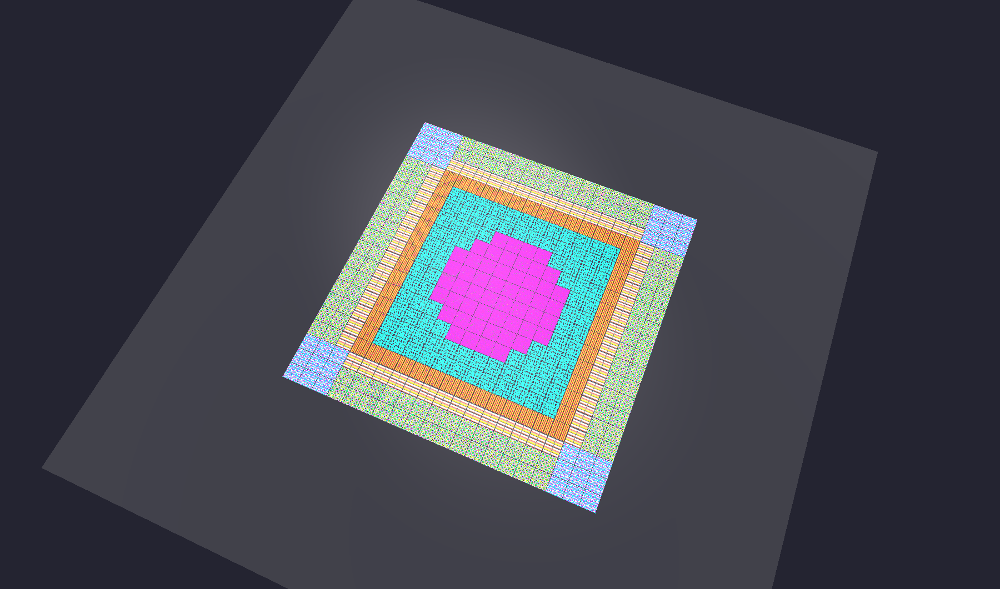
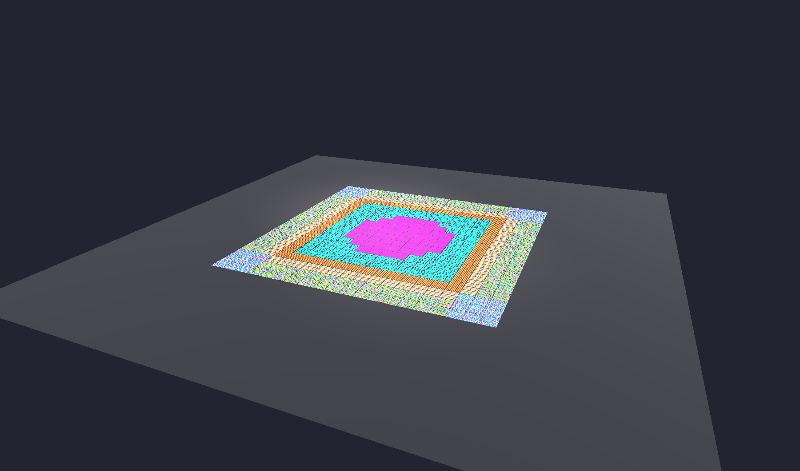
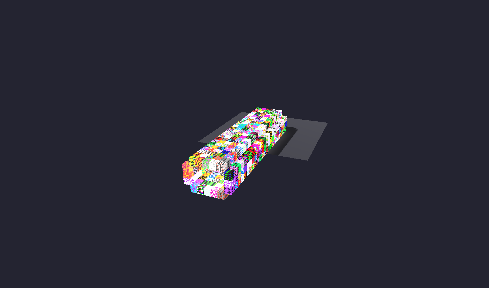
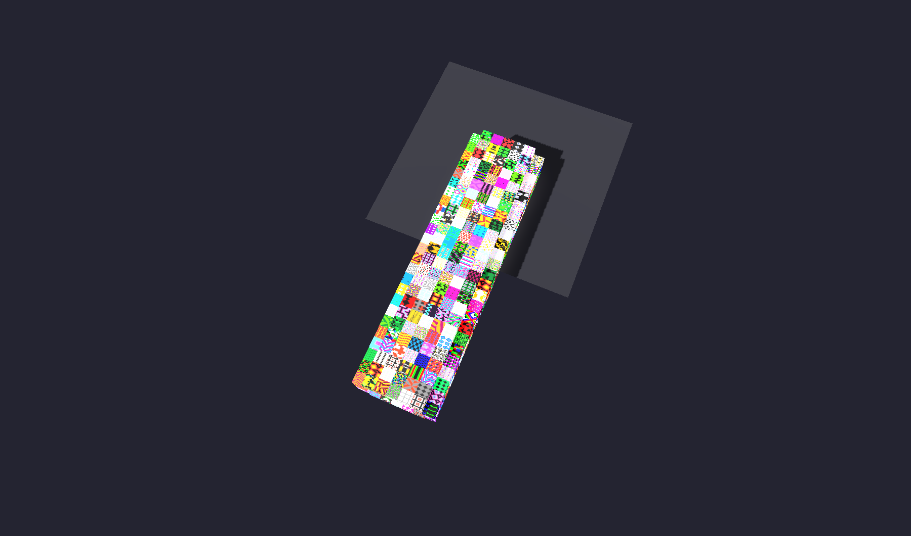
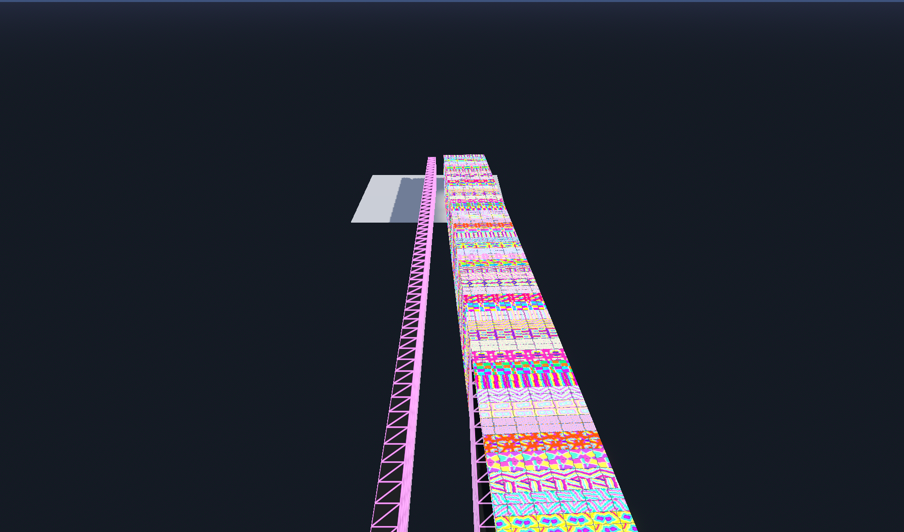
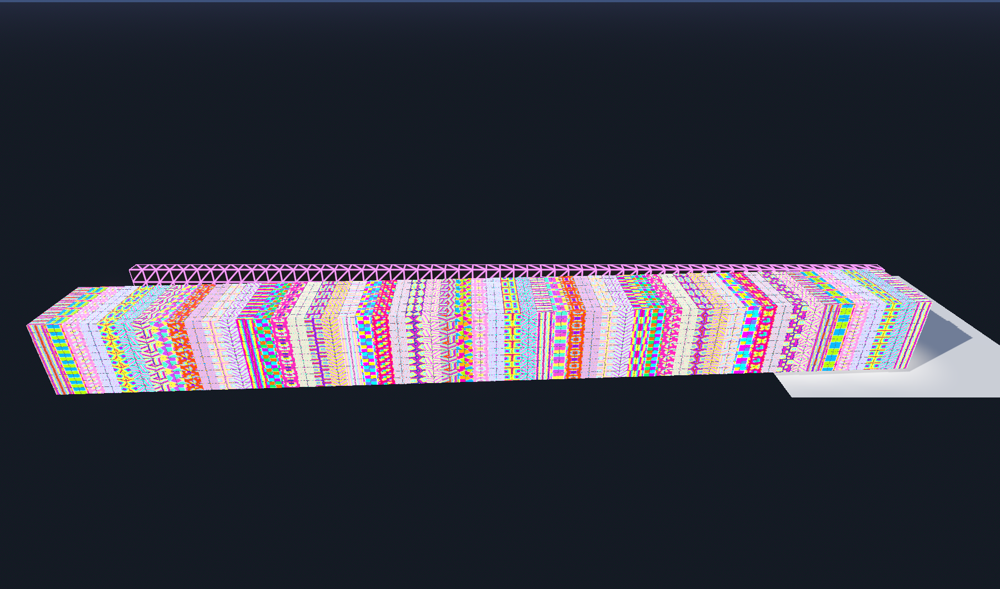

March 14, 2026
How do you arrange patterns in space? A carpet has a border, a field, a medallion, corner ornaments. A building facade has a base, columns, windows, a cornice. These are spatial compositions — and they follow the same logic as CSS grid layouts on the web.
Today we built a reusable Spatial Composition System that transposes CSS layout thinking into VR pattern arrangement. The system is content-agnostic: it maps grid positions to named zones. Different consumers fill zones with different content — wallpaper group shaders for carpets, architectural elements for facades, UI widgets for control boards.

Carpet preset: border, gutter, field, medallion, and corner zones — each with a distinct wallpaper group pattern. The kaleidoscope modifier creates 4-way symmetry.
The core lives in commons/composition/spatial_composition.gd — a single file with inner classes for Region (hit-testing primitives) and Zone (named region + properties). Static presets generate common layouts.
SpatialComposition (generic, reusable)
Region primitives: fill, border, rect, ellipse, corners, stripe, columns, ring
Zone resolution: position → zone_id (priority-ordered)
Modifiers: mirror_x, mirror_y, rotate_180, kaleidoscope
Serialization: to/from JSON
PatternCompositor (wallpaper shaders)
uses SpatialComposition to know which zone each cell belongs to
applies wallpaper_tile shader with zone-specific parametersEight region types handle all spatial hit-testing. Each answers one question: does this grid cell belong to this region?

Front view — zones clearly visible
Top view — 4-way symmetry via kaleidoscope modifier
The carpet preset creates six zones: outer border (wallpaper group P4M), gutter (simple stripes), inner border (PMM), field (P6M), medallion (P4MM), and corner ornaments (P4). Each gets a different neon palette and domain texture. The kaleidoscope modifier folds all coordinates into the top-left quadrant, creating perfect 4-way symmetry.
Before the composition system, we built the Shader Arch Gallery — a walk-through tunnel of 400 cubes, each with a unique wallpaper group tile pattern. Every cube gets its own ShaderMaterial with a different wallpaper group, palette, and procedurally generated 8x8 domain texture.

400 unique tile pattern cubes

Top view — patchwork of all 17 wallpaper groups
Inspired by Art to Eat installations — each tile a distinct artwork, the whole greater than its parts.
The Cove Display Gallery uses SurfaceTool-built half-cove slopes with GPU shaders tiling across curved surfaces. Six wall coves line a corridor, each showcasing a different shader — voronoi, tartan, rothko, truchet, reaction-diffusion, and wallpaper tiles.

Corridor with shader coves on both walls

Left wall — voronoi, tartan, reaction-diffusion
Half-cove slope: floor-to-wall curved transition built with SurfaceTool. 24-segment quarter-circle curve with continuous UV mapping for seamless shader tiling. Supports any GPU shader via config.
Walk-through tunnel of individual BoxMesh cubes, each with a unique wallpaper_tile ShaderMaterial. 10 neon palettes, 10 domain pattern generators, all 17 wallpaper groups.
Swaps the GridMultiMesh material with GPU shaders from the shader library. Cycles through different shaders on the grid cubes themselves.
Zone-based pattern composition using the SpatialComposition library. Presets: carpet, facade, mosaic, quilt. Each zone gets a different wallpaper group shader with its own palette and domain texture.
The real breakthrough is the reusable SpatialComposition class. It knows nothing about shaders or patterns — it just maps grid positions to zone IDs. Any system can use it:
var comp = SC.preset_carpet(20, 20)
var zone = comp.resolve_zone(5, 5) # → "field"
var zone = comp.resolve_zone(0, 0) # → "border_outer"
var zone = comp.resolve_zone(10, 10) # → "medallion"Facade, mosaic, and quilt presets follow — same system, different zone definitions, different content.